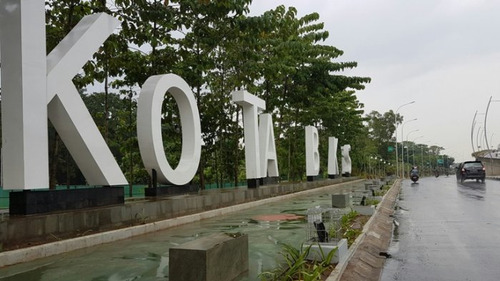
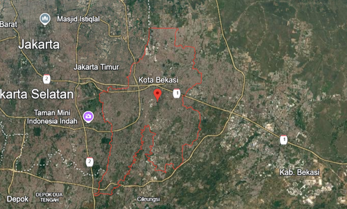
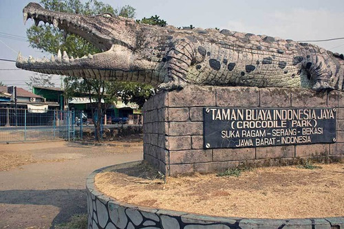
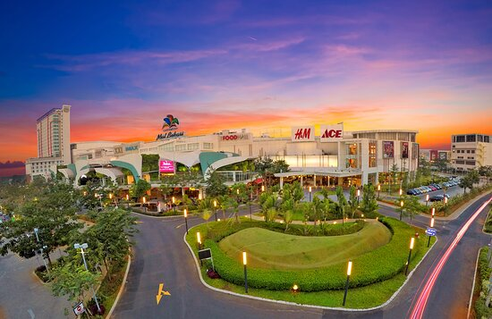
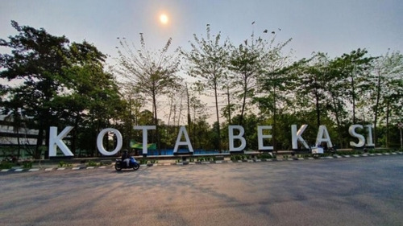

Sejarah

Bekasi berasal dari istilah "Bekasi" yang berarti "teluk" dalam bahasa
Sunda, yang merujuk pada keadaan geografis daerah tersebut yang
dikelilingi oleh sungai dan rawa. Dalam sejarahnya, Bekasi merupakan
daerah yang kaya akan sejarah, termasuk jejak peradaban Sunda yang
telah ada sejak lama. Wilayah ini juga dikenal sebagai pusat
perdagangan dan pertanian, terutama dalam masa kerajaan Sunda. Sejak
era kolonial, Bekasi menjadi lokasi penting dalam pengembangan
infrastruktur, seperti pembangunan jalan dan rel kereta api, yang
menghubungkan Jakarta dengan wilayah sekitarnya. Perkembangan industri
yang pesat pada akhir abad ke-20 mengubah wajah kota ini menjadi salah
satu pusat industri dan perumahan yang penting di Jabodetabek.
Sejak era kolonial, Bekasi menjadi lokasi penting dalam pengembangan
infrastruktur, seperti pembangunan jalan dan rel kereta api, yang
menghubungkan Jakarta dengan wilayah sekitarnya. Pada tahun 1996,
Bekasi resmi menjadi kota otonom, yang mendorong percepatan
pembangunan dan urbanisasi. Dengan pertumbuhan industri yang pesat,
Bekasi kini dikenal sebagai salah satu pusat industri utama di
Indonesia, menarik banyak pendatang dari berbagai daerah yang mencari
peluang kerja dan kehidupan yang lebih baik.
Geografis

Kota Bekasi terletak di sebelah timur Jakarta dan berbatasan langsung
dengan DKI Jakarta di bagian barat, Kabupaten Bekasi di sebelah utara,
dan Kabupaten Bogor di sebelah selatan. Secara geografis, Bekasi
berada pada ketinggian ±25 m di atas permukaan laut, dengan beberapa
kawasan yang lebih rendah dan rentan terhadap banjir. Sungai Citarum
dan Ciliwung mengaliri kota ini, memberikan tantangan tersendiri dalam
pengelolaan banjir.
Kota Bekasi memiliki topografi yang relatif datar dengan ketinggian
sekitar 10 hingga 20 meter di atas permukaan laut. Terdapat beberapa
sungai yang mengalir di wilayah ini, seperti Sungai Citarum dan Sungai
Bekasi.
Wisata
Dengan pertumbuhan populasi dan infrastruktur yang pesat, Bekasi
menjadi tujuan populer untuk tempat tinggal dan wisata. Kota ini juga
dikenal dengan berbagai pusat perbelanjaan, restoran, dan tempat
rekreasi keluarga.
Taman Buaya Indonesia Jaya

Sebagai salah satu tempat wisata edukasi, Taman Buaya Indonesia Jaya
menawarkan pengalaman melihat buaya dan reptil lainnya secara
langsung. Pengunjung dapat belajar tentang konservasi dan perilaku
buaya, serta menikmati atraksi lainnya yang disediakan di taman
tersebut.
Summarecon Mall Bekasi

Salah satu pusat perbelanjaan terbesar di Bekasi, Summarecon Mall
menawarkan berbagai pilihan belanja, kuliner, dan hiburan. Mall ini
menjadi destinasi favorit bagi keluarga dan remaja untuk berkumpul
dan bersantai.
Alun - Alun Kota Bekasi

Alun-alun ini menjadi pusat aktivitas masyarakat Bekasi, dengan
taman yang asri dan berbagai fasilitas publik. Tempat ini sering
digunakan untuk berbagai acara budaya dan hiburan, serta menjadi
lokasi berkumpul bagi warga setempat.